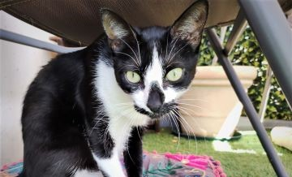

Some of my hobbies include
-
Photography / Digital and Analog
Krakow. Taken by me.
-
In-line rollerskating
Cortesy of Shutterstock.
-
Playing games (Videogames, boxed, D&D)

Alperen Yazgi. Unsplash.
-
Reading
A tiny library at my study.
-
Playing with my cats
Cora my small cat.